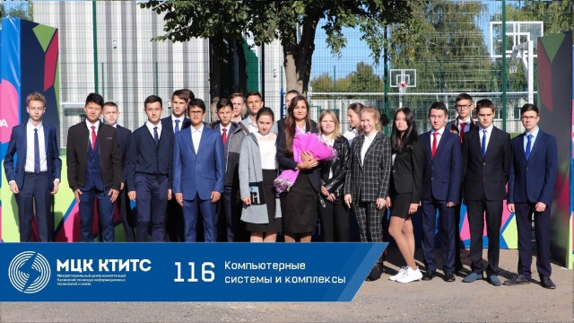

Мой техникум
МЦК-КТИТС
Адрес техникума:
ул. Галеева, 3А.
Моя группа
116 КСК

У нас очень дружная и добрая группа.
Список группы
| № | Фамилия Имя |
| 1 | Алексеев Леонид |
| 2 | Анисимов Иван |
| 3 | Арсланов Тимур |
| 4 | Булатов Ильшат |
| 5 | Вайль Анастасия |
| 6 | Габдулхаев Булат |
| 7 | Гараева Азалия |
| 8 | Гарипова Зухра |
| 9 | Горчакова Алёна |
| 10 | Димухаметов Ильназ |
| 11 | Дмитриев Сергей |
| 12 | Закиров Роберт |
| 13 | Замалиев Айнур |
| 14 | Иванов Антон |
| 15 | Кузьмин Максим |
| 16 | Мирасов Егор |
| 17 | Михалёв Владимир |
| 18 | Молчанова Лилия |
| 19 | Набиуллина Зульфия |
| 20 | Степанов Тимур |
| 21 | Тарских Александр |
| 22 | Топунова Екатерина |
| 23 | Фасхутдинов Ислам |
| 24 | Хабибуллина Ралина |
| 25 | Шакиров Искандер |
У нас преподают хорошие преподаватели.
Список преподавателей
| Предмет | ФИО |
| Математика | Габдулхакова Г.Р. |
| Русский язык | Шарипова Э.К. |
| Иностранный язык | Вильданова Г.Р. Гаязетдинова С.Ш. |
| Физика | Бабченко Т.Н. |
| Литература | Шарипова Э.К. |
| Информатика | Агзамова Г.Д. |
| История | Залялеева Л.И. |
| Родной язык | Абдул Н.А. Имамутдинова Г.Н. |
| Физическая культура | Таштиев Р.И. Петрова А.Р. |
| Химия | Никишина О.В. |
| ОБЖ | Хуснутдинова Л.Г. |
Куратор нашей группы
Шарипова Эльвира Камиловна